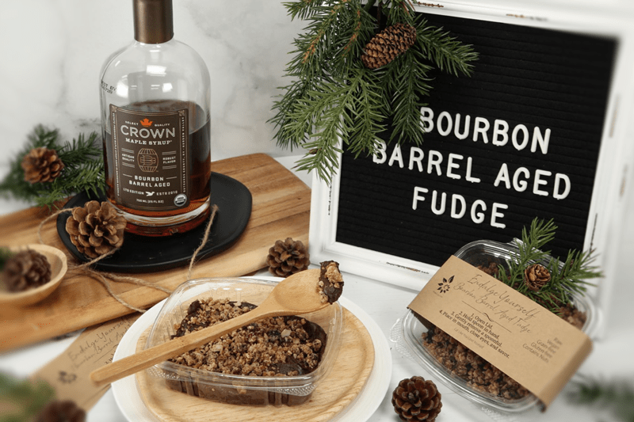
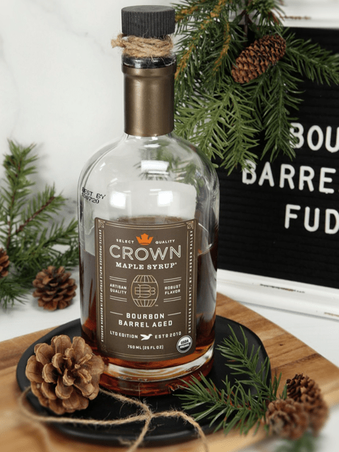

For the love of fudge! I really do enjoy fudge, but it isn’t something I have very often. So, when creating a recipe just to support our new love for Bourbon Barrel Aged Maple Syrup… I knew this was going to be something pretty special. Now, you don’t have to use this particular maple syrup in order to enjoy this recipe, but sometimes it’s the finer details in a recipe that can make it all that much more special.


Yep, this is how these outings typically go… “Oh babe, can you smell those roasted candied nuts that they are giving samples of out?” … I grab his hand in the nick of time! “They are loaded with refined sugar and corn syrup babe.” We keep walking.
“Sweetheart, OMG smell that popcorn!”… “It’s making me hungry!” (sometimes I forget that Bob can’t smell) … “Too bad we don’t eat those artificial chemicals that are supposed to resemble butter or GMO popcorn. We keep walking.
“FUDGE! They are handing out fudge samples! Look at all those flavors!” Dang, we don’t eat 95% of the ingredients that they used. We keep walking.
I could go on and on because there were about ten other food vendors down that one aisle. But you get the picture.
A Trip to Costco
It wasn’t too long after that when we motored our way to Costco to stock up on some necessities. HAHA, who am I kidding… I could build a tiny home just out of the case of toilet paper that I threw in the buggy. I swear that I spend most of the time trying to navigate my way through the aisles without running anyone down.
But even in my concentration of not taking another person’s life with my 4-wheeled, shiny, chromed buggy… I spied a jar of Bourbon Barrel Aged Maple Syrup. Hmm? We don’t do much sugar (especially as of late), but maple syrup is one sweetener that we always keep stocked. So, I decided to give this a try. I know it isn’t raw and if that doesn’t sit well with you, you could easily swap it out for a sweetener that you use.
This fudge turned out creamy, thick, sticky, and delicious. I took a tiny nibble! (shhh) When it comes to gift giving, I am always seeking out an interesting way to package an item. For the fudge, I placed it into a clamshell container and attached a spoon to it. I thought it would be fun to take tiny bites, making sure to savor each bite. Of course, you can serve it up anyway that you want.
How to get that Irresistible Creamy Texture
The key to getting a creaming texture is to make sure that all of your powders are free from lumps. Run them through a pastry sifter if need be. A lumpy powder = lumpy fudge. Also, make sure that the almond butter you use is creamy, not chunky. And lastly, you will want to use a fine almond flour. You can either purchase this (not raw), or you can make your own by dehydrating almond pulp and then grinding it to a flour. Whole almonds will not grind to a fine powder and will leave the fudge grainy feeling on the tongue.
That about sums it up for today. It’s time to get busy in the kitchen so we can share our creations with those we come in contact with. Have a blessed day, amie sue
Yields: 2 cups
- 1 1/2 cups (100g) cacao powder
- 1/4 cup (33 g) lucuma powder
- 1/4 cup (25 g) fine almond flour
- 1/2 tsp (7 g) Himalayan sea salt
- 3/4 cup (218 g) maple syrup
- 1/2 cup (122 g) almond butter
- 1 Tbsp (9 g) vanilla extract
Preparation: